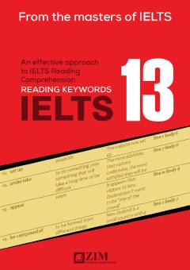

RKIELTS 13 testlari uchun ingliz tili so'z boyligini oshirish va o'qish ko'nikmasini rivojlantirish qo'llanmasi.
Ushbu kitob Cambridge IELTS 13 testlaridagi matnlar uchun qo'shimcha lug'at va so'z boyligini oshirish mashqlarini o'z ichiga oladi. O'quvchilarga ingliz tilidan xalqaro imtihonlarga tayyorgarlik ko'rishda va matnlardagi asosiy so'zlarni eslab qolishda yordam beradi.